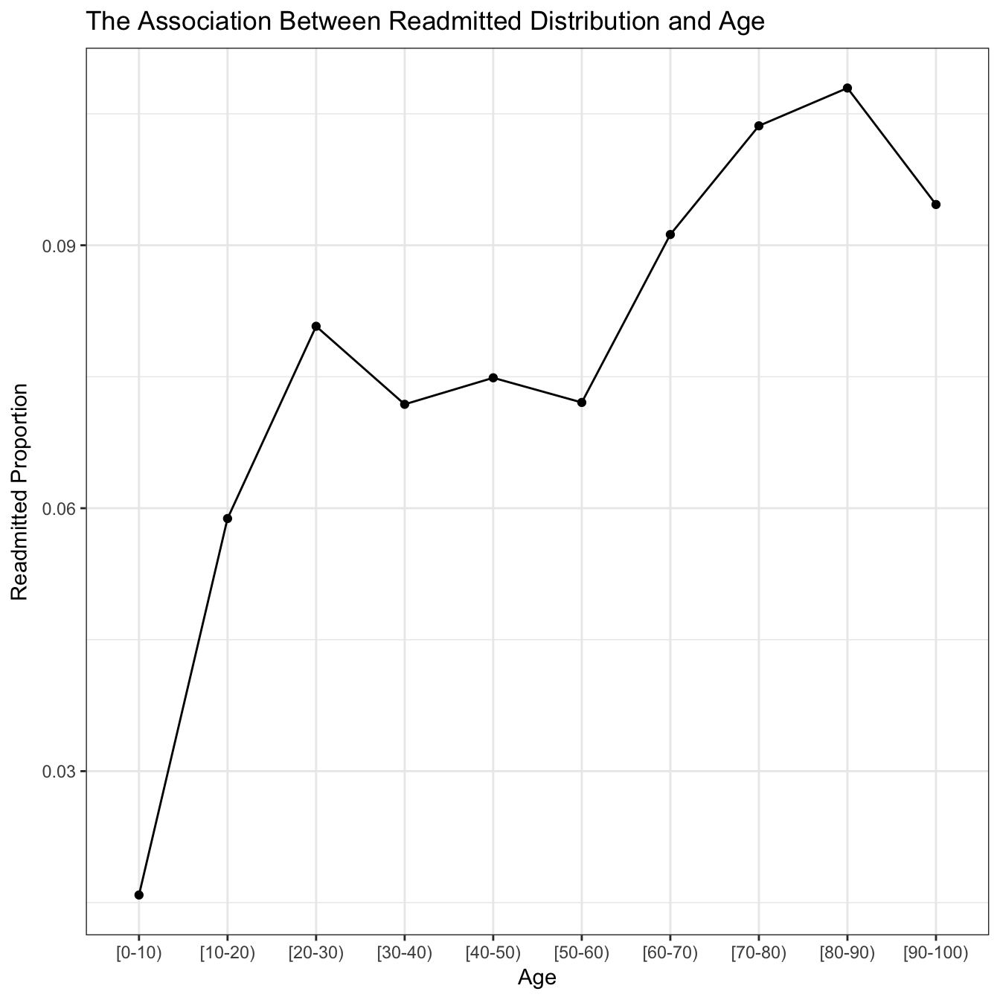
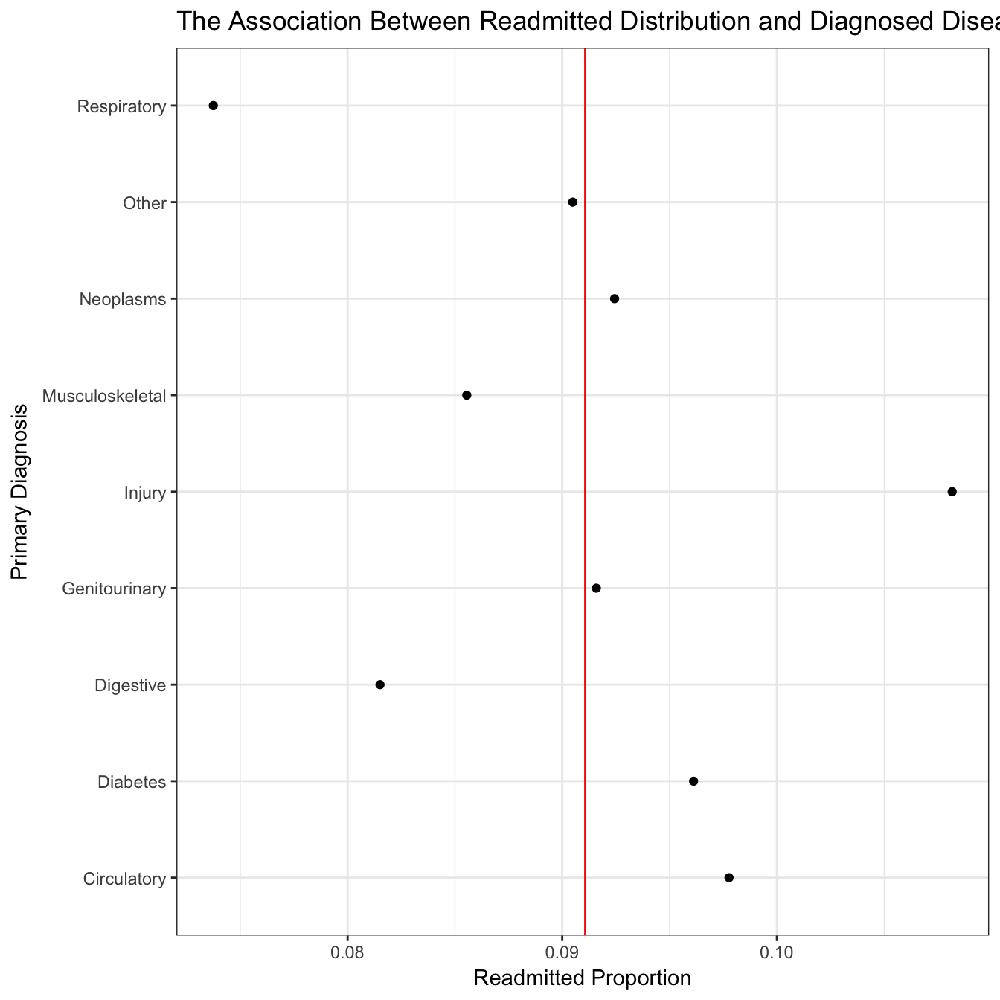
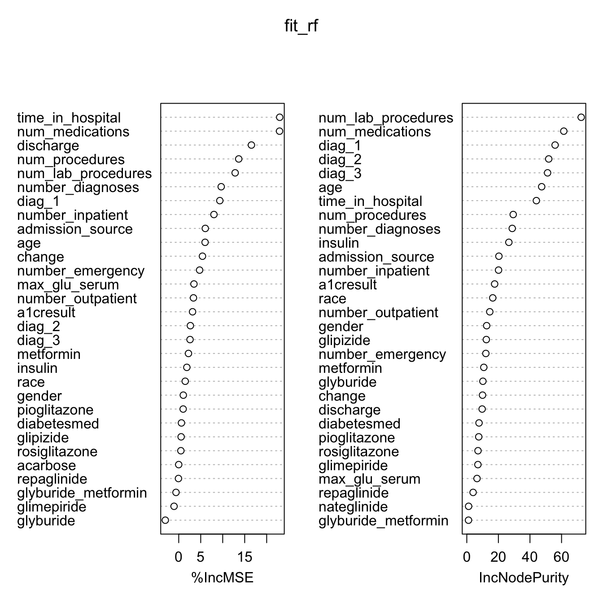

Study on Key Factors that Affect Diabetes Patient Readmission
Yangwei Yan (yy2828), Yunqiu Yao (yy2827), Boxuan Li (bl2689)
4/18/2018
In real life, it is very important to know if a patient will be readmitted in some hospital due to some particular diseases. It is not only because readmission indicates that the patient needs to suffer more from the disease, also a potential reminder that the treatment previously used to treat those patients is not effective enough. Generally, readmission should be avoided thus exploring the way to prevent readmission becomes a concern. And it is the major motivation for this study. In this case, a dataset about the readmission status of patients with diabetes extracted from the hospital records, including information on the patient’s demographic characteristics, the diagnosis and treatment, is analyzed to explore the impact of those features on the incidence of readmission in the population. This report includes the data description, exploratory study and supervised analysis, which serve to provide a sense of the data and relationship among variables in whole. The result shows that there is assication between serveral covatiates and the readmission occurrence, e.g., age, number of medications prescribed, etc.
diabetes <- read_csv('./data/diabetic_data.csv') %>%
clean_names()
# missing value proportion
diabetes[diabetes=="?"] = NA
sapply(diabetes,function(x) sum(is.na(x))/dim(diabetes)[1]) %>% .[.!=0]## race weight payer_code medical_specialty
## 0.0223355541 0.9685847926 0.3955741603 0.4908220820
## diag_1 diag_2 diag_3
## 0.0002063558 0.0035178743 0.0139830592# Therefore, we consider to omit those variables with large number of missing values, i.e., 'weight', 'payer code' and 'medical specialty'. We further omit NA values in other variables.
diabetes <- diabetes %>%
select(., everything(), -weight, -payer_code, -medical_specialty) %>%
na.omit() %>%
arrange(patient_nbr) %>%
group_by(patient_nbr) %>%
filter(row_number(encounter_id)==1,
!(discharge_disposition_id %in% c(11,13,14,19:21))) %>%
# Classify the readmitted status into “Yes” if the patient was readmitted in less than 30 days and “No” if the patient was readmitted in more than 30 days or no record of readmission.
ungroup() %>%
mutate(readmitted=ifelse(readmitted=="<30","Yes","No")) %>%
filter(nateglinide %in% c("No","Steady"),
glyburide_metformin %in% c("No","Steady"),
gender %in% c("Female","Male"),
acarbose %in% c("No","Steady"))
# Specify the variable "Diagnosis" as the correspnding diagnosed diseases
diabetes_tidy = diabetes %>%
mutate(
diag_1=ifelse(diag_1>=390 & diag_1 <= 459 | diag_1 == 785, "Circulatory",
ifelse(diag_1>=460 & diag_1 <= 519 | diag_1 == 786, "Respiratory",
ifelse(diag_1>=520 & diag_1 <= 579 | diag_1 == 787, "Digestive",
ifelse(substr(diag_1, 1, 3) == 250, "Diabetes",
ifelse(diag_1>=800 & diag_1 <= 999, "Injury",
ifelse(diag_1>=710 & diag_1 <= 739, "Musculoskeletal",
ifelse(diag_1>=580 & diag_1 <= 629 | diag_1 == 788, "Genitourinary",
ifelse(diag_1>=140 & diag_1 <= 239, "Neoplasms", "Other")))))))),
diag_2=ifelse(diag_2>=390 & diag_2 <= 459 | diag_2 == 785, "Circulatory",
ifelse(diag_2>=460 & diag_2 <= 519 | diag_2 == 786, "Respiratory",
ifelse(diag_2>=520 & diag_2 <= 579 | diag_2 == 787, "Digestive",
ifelse(substr(diag_2, 1, 3) == 250, "Diabetes",
ifelse(diag_2>=800 & diag_2 <= 999, "Injury",
ifelse(diag_2>=710 & diag_2 <= 739, "Musculoskeletal",
ifelse(diag_2>=580 & diag_2 <= 629 | diag_2 == 788, "Genitourinary",
ifelse(diag_2>=140 & diag_2 <= 239, "Neoplasms", "Other")))))))),
diag_3=ifelse(diag_3>=390 & diag_3 <= 459 | diag_3 == 785, "Circulatory",
ifelse(diag_3>=460 & diag_3 <= 519 | diag_3 == 786, "Respiratory",
ifelse(diag_3>=520 & diag_3 <= 579 | diag_3 == 787, "Digestive",
ifelse(substr(diag_3, 1, 3) == 250, "Diabetes",
ifelse(diag_3>=800 & diag_3 <= 999, "Injury",
ifelse(diag_3>=710 & diag_3 <= 739, "Musculoskeletal",
ifelse(diag_3>=580 & diag_3 <= 629 | diag_3 == 788, "Genitourinary",
ifelse(diag_3>=140 & diag_3 <= 239, "Neoplasms", "Other")))))))),
)
diabetes_tidy = diabetes_tidy %>%
mutate(
discharge = ifelse(discharge_disposition_id==1, "Home", "Other"),
admission_source = ifelse(admission_source_id==7, "Emergency",
ifelse(admission_source_id %in% 1:3, "Referral", "Other"))
) %>%
select(-c(encounter_id,patient_nbr,admission_type_id,admission_source_id,discharge_disposition_id,chlorpropamide,acetohexamide,tolbutamide,miglitol,troglitazone,tolazamide,examide,citoglipton,glipizide_metformin,glimepiride_pioglitazone,metformin_rosiglitazone,metformin_pioglitazone)) %>%
mutate_if(is.character, as.factor)Data Description
The dataset used in this study was extracted from the Health Facts database (Cerner Corporation, Kansas City, MO), a national data warehouse that collects comprehensive clinical records across hospitals throughout the United States. Information in the dataset was systematically collected from participating institutions electronic medical records. In this case, we focus on the records on “diabetic” encounters. The dataset contains 67069 observations and 47 variables before data cleaning. Specifically, it incorporates basic information on each “diabetic” encounter for patients, including several demographic characteristics (i.e., “race”, “gender” and “age”), hospital records about diagnosis, medical treatments, and the readmission status for each patient. Most of variables in the dataset are categorical, with two or three categories (e.g., “Yes”, “No”, “Steady”, etc.), indicating whether the patient received some treatments with varying doses or had some particular features. Information in this dataset can be helpful to evaluate the efficacy of different treatments to reduce the readmission rate of patients due to diabetes. Therefore, the “readmitted” variable is regarded as the main response in the supervised analysis section, which will aim to explore the impact of different treatments to the readmission due to diaebtes. Result of this research is promising to provide some insights in improvement of the diabetes treatment.
During the data cleaning process, we omitted the variables with too many missing values with the proportion of missing values over 30%, i.e., ‘weight’, ‘payer code’ and ‘medical specialty’, with few missing values left in other variables omiited as well. Data in the original dataset are considered to be correlated because it contained multiple visits per patients. Thus only the first encounter for each patient was filtered out as the primary admission status. In addtion, we combined “No” and “>30” categories in the “readmitted” variable into “No” category because it has been verified by research that it is more likely for a patient to readmit after 30 days due to his or her own healthy issues instead of the treatment. Therefore, only readmission within 30 days after discharge was considered to be associated with the treatment in this case, which is why three categories were combined into two indicating readmission related to treatment and readmission irrelevant to treatment respectively. In terms of those numeric variables referring to categorical meanings such as “diag_1”, “diag_2”, “diag_3” and “discharge”, we substituted them with the original implications in the form of factors. Futhermore, multiple variables were found to give extremely separate categories, which may bring some errors while predicting the response in the supervised analysis, thus they were also removed and will not be considered in further analyses. After the process of data cleaning, the dataset still contains 67069 observations and 32 variables.
Exploratory Data Analysis
# summary table for numeric variables
diabetes_tidy %>%
select_if(is.integer) %>%
apply(2,summary) %>%
pander::pander(caption="For numeric variables")| time_in_hospital | num_lab_procedures | num_procedures | |
|---|---|---|---|
| Min. | 1 | 1 | 0 |
| 1st Qu. | 2 | 31 | 0 |
| Median | 4 | 44 | 1 |
| Mean | 4.3 | 42.92 | 1.44 |
| 3rd Qu. | 6 | 57 | 2 |
| Max. | 14 | 132 | 6 |
| num_medications | number_outpatient | number_emergency | |
|---|---|---|---|
| Min. | 1 | 0 | 0 |
| 1st Qu. | 10 | 0 | 0 |
| Median | 14 | 0 | 0 |
| Mean | 15.77 | 0.2864 | 0.1069 |
| 3rd Qu. | 20 | 0 | 0 |
| Max. | 81 | 42 | 42 |
| number_inpatient | number_diagnoses | |
|---|---|---|
| Min. | 0 | 3 |
| 1st Qu. | 0 | 6 |
| Median | 0 | 8 |
| Mean | 0.1834 | 7.325 |
| 3rd Qu. | 0 | 9 |
| Max. | 12 | 16 |
# summary table for categorical variables
freq.table = function(x,name){
table = data.frame(x)
names(table) = c("Value","Count")
table$Fraction = with(table,Count/sum(Count))
data.frame(Variable=name,table)
}
fct_diabetes = diabetes_tidy %>%
select_if(is.factor) %>%
lapply(table)
do.call(rbind,lapply(seq_along(fct_diabetes),function(i) freq.table(fct_diabetes[i],names(fct_diabetes[i])))) %>%
pander::pander(caption="For categorical variables")| Variable | Value | Count | Fraction |
|---|---|---|---|
| race | AfricanAmerican | 12398 | 0.1849 |
| race | Asian | 476 | 0.007097 |
| race | Caucasian | 51604 | 0.7694 |
| race | Hispanic | 1459 | 0.02175 |
| race | Other | 1132 | 0.01688 |
| gender | Female | 35777 | 0.5334 |
| gender | Male | 31292 | 0.4666 |
| age | [0-10) | 63 | 0.0009393 |
| age | [10-20) | 357 | 0.005323 |
| age | [20-30) | 1003 | 0.01495 |
| age | [30-40) | 2519 | 0.03756 |
| age | [40-50) | 6477 | 0.09657 |
| age | [50-60) | 11878 | 0.1771 |
| age | [60-70) | 15138 | 0.2257 |
| age | [70-80) | 17177 | 0.2561 |
| age | [80-90) | 10756 | 0.1604 |
| age | [90-100) | 1701 | 0.02536 |
| diag_1 | Circulatory | 20773 | 0.3097 |
| diag_1 | Diabetes | 5129 | 0.07647 |
| diag_1 | Digestive | 6306 | 0.09402 |
| diag_1 | Genitourinary | 3341 | 0.04981 |
| diag_1 | Injury | 4530 | 0.06754 |
| diag_1 | Musculoskeletal | 3869 | 0.05769 |
| diag_1 | Neoplasms | 2434 | 0.03629 |
| diag_1 | Other | 11493 | 0.1714 |
| diag_1 | Respiratory | 9194 | 0.1371 |
| diag_2 | Circulatory | 21818 | 0.3253 |
| diag_2 | Diabetes | 8899 | 0.1327 |
| diag_2 | Digestive | 2795 | 0.04167 |
| diag_2 | Genitourinary | 5205 | 0.07761 |
| diag_2 | Injury | 1766 | 0.02633 |
| diag_2 | Musculoskeletal | 1254 | 0.0187 |
| diag_2 | Neoplasms | 1561 | 0.02327 |
| diag_2 | Other | 17022 | 0.2538 |
| diag_2 | Respiratory | 6749 | 0.1006 |
| diag_3 | Circulatory | 20857 | 0.311 |
| diag_3 | Diabetes | 12202 | 0.1819 |
| diag_3 | Digestive | 2668 | 0.03978 |
| diag_3 | Genitourinary | 3933 | 0.05864 |
| diag_3 | Injury | 1383 | 0.02062 |
| diag_3 | Musculoskeletal | 1327 | 0.01979 |
| diag_3 | Neoplasms | 1129 | 0.01683 |
| diag_3 | Other | 19023 | 0.2836 |
| diag_3 | Respiratory | 4547 | 0.0678 |
| max_glu_serum | >200 | 906 | 0.01351 |
| max_glu_serum | >300 | 690 | 0.01029 |
| max_glu_serum | None | 63818 | 0.9515 |
| max_glu_serum | Norm | 1655 | 0.02468 |
| a1cresult | >7 | 2777 | 0.04141 |
| a1cresult | >8 | 5722 | 0.08532 |
| a1cresult | None | 54942 | 0.8192 |
| a1cresult | Norm | 3628 | 0.05409 |
| metformin | Down | 414 | 0.006173 |
| metformin | No | 52790 | 0.7871 |
| metformin | Steady | 13079 | 0.195 |
| metformin | Up | 786 | 0.01172 |
| repaglinide | Down | 28 | 0.0004175 |
| repaglinide | No | 66168 | 0.9866 |
| repaglinide | Steady | 805 | 0.012 |
| repaglinide | Up | 68 | 0.001014 |
| nateglinide | No | 66611 | 0.9932 |
| nateglinide | Steady | 458 | 0.006829 |
| glimepiride | Down | 131 | 0.001953 |
| glimepiride | No | 63532 | 0.9473 |
| glimepiride | Steady | 3185 | 0.04749 |
| glimepiride | Up | 221 | 0.003295 |
| glipizide | Down | 357 | 0.005323 |
| glipizide | No | 58377 | 0.8704 |
| glipizide | Steady | 7776 | 0.1159 |
| glipizide | Up | 559 | 0.008335 |
| glyburide | Down | 399 | 0.005949 |
| glyburide | No | 59611 | 0.8888 |
| glyburide | Steady | 6464 | 0.09638 |
| glyburide | Up | 595 | 0.008871 |
| pioglitazone | Down | 79 | 0.001178 |
| pioglitazone | No | 61998 | 0.9244 |
| pioglitazone | Steady | 4823 | 0.07191 |
| pioglitazone | Up | 169 | 0.00252 |
| rosiglitazone | Down | 71 | 0.001059 |
| rosiglitazone | No | 62570 | 0.9329 |
| rosiglitazone | Steady | 4299 | 0.0641 |
| rosiglitazone | Up | 129 | 0.001923 |
| acarbose | No | 66886 | 0.9973 |
| acarbose | Steady | 183 | 0.002729 |
| insulin | Down | 7059 | 0.1052 |
| insulin | No | 33079 | 0.4932 |
| insulin | Steady | 20451 | 0.3049 |
| insulin | Up | 6480 | 0.09662 |
| glyburide_metformin | No | 66611 | 0.9932 |
| glyburide_metformin | Steady | 458 | 0.006829 |
| change | Ch | 30139 | 0.4494 |
| change | No | 36930 | 0.5506 |
| diabetesmed | No | 16119 | 0.2403 |
| diabetesmed | Yes | 50950 | 0.7597 |
| readmitted | No | 60961 | 0.9089 |
| readmitted | Yes | 6108 | 0.09107 |
| discharge | Home | 42204 | 0.6293 |
| discharge | Other | 24865 | 0.3707 |
| admission_source | Emergency | 36103 | 0.5383 |
| admission_source | Other | 9214 | 0.1374 |
| admission_source | Referral | 21752 | 0.3243 |
The summary and the table presents an basic but comprehensive overview of the dataset, including the class of each variable, the proportion in the population for categorical variables and the related statitics for numeric variables. Based on the table, it can be found that there are 8 continuous and 24 categorical variables after data cleaning. Most patients are caucasian. Remarkably, older people seem to have higher risk for diabetes since the age of patients mostly falls around 70. The mean number of medications prescribed for those patients is about 16, among which insulin is still the major treatment medication since over 50% patients take insulin while the proportion of patients who take other medication is so small. Concerning the response “readmitted”, only 10% of all patients studied in this case readmit within 30 days after previous discharge. Even though it is a minor fraction, it is still essential to study how to improve the treatment to avoid readmission.
# visualize the associations
# readmitted and age
age = diabetes_tidy %>%
group_by(age) %>%
summarise(count_yes = sum(readmitted == "Yes"),
count_no = sum(readmitted == "No"),
proportion = count_yes/(count_yes + count_no))
ggplot(age, aes(age, proportion, group = 1)) +
geom_point() +
geom_line() +
labs(title = "The Association Between Readmitted Distribution and Age",
x = "Age",
y = "Readmitted Proportion")
# readmitted and primary diagnosis
disease = diabetes_tidy %>%
group_by(diag_1) %>%
summarise(count_yes = sum(readmitted == "Yes"),
count_no = sum(readmitted == "No"),
proportion = count_yes/(count_yes + count_no))
overall_prop = sum(disease$count_yes)/(sum(disease$count_yes) + sum(disease$count_no))
ggplot(disease, aes(proportion, diag_1)) +
geom_point() +
geom_vline(xintercept = overall_prop, color = "red") +
labs(title = "The Association Between Readmitted Distribution and Diagnosed Disease",
x = "Readmitted Proportion",
y = "Primary Diagnosis")
By exploring the association between readmission proportion and some potential predictors, we obtained some interesting findings. As shown in the first plot above, the readmitted proportion increased dramatically in the age interval 0-30, then it almost remained stable in the age interval 30-60, with a following trend of increase in 60-90. It indicated that older diabete patients (above 60) tended to have a higher probability of being readmitted in 30 days. However, for 90+ years old patients, they had a relatively lower readmitted proportion compared to those with the age of 80-90. It could be possible that the patients with the age of 90+ were more likely to be expired due to other diseases before readmission.
The second plot demonstrated the relationship between readmission proportion and primary diagnosis. The red vertical line is the reference line, representing the average proportion of readmitted. The readmitted proportions of patients diagnosed with neoplasms, genitourinary and other diseases were around the reference line, which indicated that these diseases might not have a strong relationship with readmission. In contrast, patients diagnosed with respiratory and injury could have a strong relationship with readmission status.
Supervised Analysis
Considering the overwhelming data that could cause difficulty in techinics used in supervised analysis, we decided to appropriately reduce the size to 20000 observations randomly.
set.seed(100)
rsample = sample(1:nrow(diabetes_tidy), 20000)
diabetes_tidy = diabetes_tidy[rsample, ]Classification techniques including logistic regression, k-nearest neighbor classifiers, tree-based methods and support vector machines were applied to predict whether a patient would be readmitted in 30 days. By comparing the performance of different techniques, we explored the association between readmission and potential predictors, and compared the prediction accuracy of each technique.
# create test set
set.seed(1)
nrow_train = sample(1:nrow(diabetes_tidy), 10000)K-nearest neighbor (KNN) classifiers
K-nearest neighbor (KNN) classifiers is one of the model-free classification methods. KNN requires no assumption on the distrbution that generate the data. Thus we applied KNN in our dataset with large amounts of predictors. Since KNN measures the nearest distance between training points and the point \(x_0\) to predict, it is impossible to evaluate the distance if the predictor \(x_i\) is categorical. For example, it is not rationale to measure the distance between \(x_0\) and “female” or \(x_0\) and “male”. Therefore, we only included numerical predictors to construct the KNN model. As shown in the results, the test error rate of KNN was 9.64%. According to the confusion matrix, 958 patients readmitted in 30 days were misclassified to the group with no readmission, while 6 patients who had not been readmitted were misclassified to the group with readmission.
# training and test set for knn
readmit = diabetes_tidy[nrow_train,]$readmitted
train = as.data.frame(diabetes_tidy[nrow_train, c(4:10, 14)])
test = diabetes_tidy[-nrow_train, c(4:10, 14)]
# perform KNN
set.seed(1)
pred_knn_prob = 1-attributes(knn(train, test, prob=TRUE,cl = readmit, k = 10))$prob
pred_knn = knn(train, test, cl = readmit, k = 10)
cm.knn = confusionMatrix(pred_knn, diabetes_tidy[-nrow_train,]$readmitted); cm.knn## Confusion Matrix and Statistics
##
## Reference
## Prediction No Yes
## No 9034 958
## Yes 6 2
##
## Accuracy : 0.9036
## 95% CI : (0.8976, 0.9093)
## No Information Rate : 0.904
## P-Value [Acc > NIR] : 0.5625
##
## Kappa : 0.0025
## Mcnemar's Test P-Value : <2e-16
##
## Sensitivity : 0.999336
## Specificity : 0.002083
## Pos Pred Value : 0.904123
## Neg Pred Value : 0.250000
## Prevalence : 0.904000
## Detection Rate : 0.903400
## Detection Prevalence : 0.999200
## Balanced Accuracy : 0.500710
##
## 'Positive' Class : No
## Classification Tree
We fitted a classification tree to the training data and used cross-validation on the training set to determine the optimal tree size by chosing the optimal parameter cp. After the model fitting, we obtained the test error rate of 9.6%, with an extremely high sensitivity of 100% and an extremly low specificity of 0%.
set.seed(1)
train_tree = diabetes_tidy[nrow_train,]
fit_tree = train(train_tree[,-30],
train_tree$readmitted,
method = "rpart",
trControl = trainControl(method = "cv", number = 10))
pred_tree_prob = predict(fit_tree, newdata = diabetes_tidy[-nrow_train,],type="prob")
pred_tree = predict(fit_tree, newdata = diabetes_tidy[-nrow_train,])
cm.tree = confusionMatrix(pred_tree, diabetes_tidy[-nrow_train,]$readmitted); cm.tree## Confusion Matrix and Statistics
##
## Reference
## Prediction No Yes
## No 9040 960
## Yes 0 0
##
## Accuracy : 0.904
## 95% CI : (0.8981, 0.9097)
## No Information Rate : 0.904
## P-Value [Acc > NIR] : 0.5086
##
## Kappa : 0
## Mcnemar's Test P-Value : <2e-16
##
## Sensitivity : 1.000
## Specificity : 0.000
## Pos Pred Value : 0.904
## Neg Pred Value : NaN
## Prevalence : 0.904
## Detection Rate : 0.904
## Detection Prevalence : 1.000
## Balanced Accuracy : 0.500
##
## 'Positive' Class : No
## Random Forest
Random forest technique was also used in this case. This method can not only predict the class of each observation in the test set, also measure the importance of variables during the fitting process. The number of variables randomly sampled as candidates at each split in this study was selected as the squre root of number of covariates used to fit the model, i.e., \(\sqrt{32-1}\approx6\).
set.seed(1)
library(randomForest)
diabetes_rf <- mutate(diabetes_tidy, readmitted = ifelse(readmitted =='Yes', 1,0)) %>%
ungroup()
fit_rf = randomForest(readmitted~., data = diabetes_rf, subset = nrow_train, mtry = 6, importance = TRUE)
varImpPlot(fit_rf)
pred_rf_prob = predict(fit_rf, newdata=diabetes_tidy[-nrow_train,],type="response")
pred_rf = rep("No",length(pred_rf_prob))
pred_rf[pred_rf_prob>=0.3] = "Yes"
pred_rf = as.factor(pred_rf)
cm.rf = confusionMatrix(pred_rf, diabetes_tidy[-nrow_train,]$readmitted); cm.rf## Confusion Matrix and Statistics
##
## Reference
## Prediction No Yes
## No 9002 948
## Yes 38 12
##
## Accuracy : 0.9014
## 95% CI : (0.8954, 0.9072)
## No Information Rate : 0.904
## P-Value [Acc > NIR] : 0.8161
##
## Kappa : 0.0144
## Mcnemar's Test P-Value : <2e-16
##
## Sensitivity : 0.9958
## Specificity : 0.0125
## Pos Pred Value : 0.9047
## Neg Pred Value : 0.2400
## Prevalence : 0.9040
## Detection Rate : 0.9002
## Detection Prevalence : 0.9950
## Balanced Accuracy : 0.5041
##
## 'Positive' Class : No
## The plot of “%IncMSE” and “IncNodePurity” presents the impact of each variable on the change of MSE and node purity in each split during the model fitting. %IncMSE is the most robust and informative measure. It is the increase in mse of predictions(estimated with out-of-bag-CV) as a result of variable j being permuted(values randomly shuffled). And the IncNodePurity relates to the loss function which by best splits are chosen. The larger the two values are, the more important the variable is. Hence, both plots indicate that several variables, e.g., “num_medication”, “time_in_hospital”, “number_lab_procedures”,etc., are the most important to accurately predict the response “readmitted”.
After predicting the response in test set, we compared the predicted ones with the true reponse and made the confusion matrix. The test error rate is therefore \((1-0.9014)*100\%=9.86\%\).
Support Vector Machines
library(e1071)
# model construction
svm.model = svm(readmitted~.,data=diabetes_tidy[nrow_train,],probability=TRUE,type="C-classification",cost=10,gamma=0.01)
pred_svm_prob = attributes(predict(svm.model,newdata=diabetes_tidy[-nrow_train,],probability=TRUE))$probabilities
pred_svm = predict(svm.model,newdata=diabetes_tidy[-nrow_train,])
cm.svm = confusionMatrix(pred_svm,diabetes_tidy[-nrow_train,]$readmitted); cm.svm## Confusion Matrix and Statistics
##
## Reference
## Prediction No Yes
## No 9036 958
## Yes 4 2
##
## Accuracy : 0.9038
## 95% CI : (0.8979, 0.9095)
## No Information Rate : 0.904
## P-Value [Acc > NIR] : 0.5356
##
## Kappa : 0.003
## Mcnemar's Test P-Value : <2e-16
##
## Sensitivity : 0.999558
## Specificity : 0.002083
## Pos Pred Value : 0.904142
## Neg Pred Value : 0.333333
## Prevalence : 0.904000
## Detection Rate : 0.903600
## Detection Prevalence : 0.999400
## Balanced Accuracy : 0.500820
##
## 'Positive' Class : No
## Here we tried to use support vector machine to perform the classification. In order to capture the potential nonlinearities in the support-vector classifiers and to obtain better prediction, we use the radial kernel for svm. The result shows that we have a low overall error rate (9.62%) for the prediction. The sensitivity is extremely high, with a value 99.96%, while the specificity is very low, which is only 0.21%. This means the svm model performs quite well on identifing those who do not need to be readmitted (true negative), but has poor ability on the identification of those who require readmission (true positive).
Logistic Regression
log.fit = glm(readmitted~.,data=diabetes_tidy,subset=nrow_train,family="binomial")
summary(log.fit)##
## Call:
## glm(formula = readmitted ~ ., family = "binomial", data = diabetes_tidy,
## subset = nrow_train)
##
## Deviance Residuals:
## Min 1Q Median 3Q Max
## -1.9753 -0.4738 -0.3968 -0.3333 2.6952
##
## Coefficients:
## Estimate Std. Error z value Pr(>|z|)
## (Intercept) -5.994e+01 2.616e+03 -0.023 0.9817
## raceAsian -2.728e-01 4.385e-01 -0.622 0.5339
## raceCaucasian -2.615e-02 9.474e-02 -0.276 0.7826
## raceHispanic -5.045e-02 2.792e-01 -0.181 0.8566
## raceOther -2.923e-01 3.269e-01 -0.894 0.3713
## genderMale 6.839e-04 7.207e-02 0.009 0.9924
## age[10-20) 6.175e-02 8.179e+02 0.000 0.9999
## age[20-30) 1.431e+01 7.183e+02 0.020 0.9841
## age[30-40) 1.381e+01 7.183e+02 0.019 0.9847
## age[40-50) 1.397e+01 7.183e+02 0.019 0.9845
## age[50-60) 1.397e+01 7.183e+02 0.019 0.9845
## age[60-70) 1.425e+01 7.183e+02 0.020 0.9842
## age[70-80) 1.422e+01 7.183e+02 0.020 0.9842
## age[80-90) 1.421e+01 7.183e+02 0.020 0.9842
## age[90-100) 1.382e+01 7.183e+02 0.019 0.9846
## time_in_hospital 9.129e-03 1.441e-02 0.634 0.5263
## num_lab_procedures 2.939e-03 2.083e-03 1.411 0.1582
## num_procedures -2.432e-02 2.432e-02 -1.000 0.3173
## num_medications -4.591e-03 5.693e-03 -0.806 0.4200
## number_outpatient -2.242e-03 3.334e-02 -0.067 0.9464
## number_emergency 6.148e-02 4.537e-02 1.355 0.1755
## number_inpatient 3.727e-01 4.345e-02 8.579 < 2e-16 ***
## diag_1Diabetes -6.218e-02 1.568e-01 -0.397 0.6917
## diag_1Digestive -2.893e-01 1.469e-01 -1.969 0.0489 *
## diag_1Genitourinary -3.190e-02 1.760e-01 -0.181 0.8561
## diag_1Injury -1.325e-01 1.490e-01 -0.889 0.3740
## diag_1Musculoskeletal -4.193e-02 1.656e-01 -0.253 0.8001
## diag_1Neoplasms -3.055e-01 2.274e-01 -1.344 0.1791
## diag_1Other -2.075e-01 1.162e-01 -1.786 0.0740 .
## diag_1Respiratory -1.864e-01 1.204e-01 -1.548 0.1216
## diag_2Diabetes 1.706e-01 1.240e-01 1.376 0.1689
## diag_2Digestive -9.572e-02 2.048e-01 -0.467 0.6403
## diag_2Genitourinary -3.176e-01 1.526e-01 -2.081 0.0374 *
## diag_2Injury 1.333e-01 2.224e-01 0.599 0.5490
## diag_2Musculoskeletal 1.207e-01 2.735e-01 0.441 0.6589
## diag_2Neoplasms 9.760e-02 2.468e-01 0.395 0.6926
## diag_2Other 5.189e-03 9.916e-02 0.052 0.9583
## diag_2Respiratory -1.239e-01 1.299e-01 -0.954 0.3400
## diag_3Diabetes 1.989e-02 1.119e-01 0.178 0.8589
## diag_3Digestive 3.330e-01 1.812e-01 1.838 0.0661 .
## diag_3Genitourinary 1.388e-01 1.524e-01 0.910 0.3626
## diag_3Injury 1.676e-02 2.462e-01 0.068 0.9457
## diag_3Musculoskeletal -6.536e-02 2.627e-01 -0.249 0.8035
## diag_3Neoplasms 2.642e-01 2.709e-01 0.975 0.3294
## diag_3Other -1.431e-01 9.652e-02 -1.483 0.1381
## diag_3Respiratory 1.588e-01 1.379e-01 1.152 0.2494
## number_diagnoses 3.924e-02 2.223e-02 1.765 0.0775 .
## max_glu_serum>300 -2.910e-01 4.628e-01 -0.629 0.5295
## max_glu_serumNone -1.262e-01 3.041e-01 -0.415 0.6783
## max_glu_serumNorm -3.771e-01 3.890e-01 -0.969 0.3324
## a1cresult>8 2.197e-01 2.331e-01 0.942 0.3461
## a1cresultNone 2.098e-01 2.018e-01 1.040 0.2985
## a1cresultNorm 2.277e-01 2.459e-01 0.926 0.3544
## metforminNo 1.412e+01 3.311e+02 0.043 0.9660
## metforminSteady 1.408e+01 3.311e+02 0.043 0.9661
## metforminUp 1.373e+01 3.311e+02 0.041 0.9669
## repaglinideNo 1.415e+01 2.400e+03 0.006 0.9953
## repaglinideSteady 1.421e+01 2.400e+03 0.006 0.9953
## repaglinideUp 1.543e+01 2.400e+03 0.006 0.9949
## nateglinideSteady -2.398e-01 4.746e-01 -0.505 0.6133
## glimepirideNo 4.610e-01 7.487e-01 0.616 0.5381
## glimepirideSteady 4.863e-01 7.592e-01 0.641 0.5218
## glimepirideUp 6.645e-01 9.676e-01 0.687 0.4923
## glipizideNo -1.146e-01 4.263e-01 -0.269 0.7881
## glipizideSteady -2.151e-02 4.275e-01 -0.050 0.9599
## glipizideUp -3.424e-01 5.752e-01 -0.595 0.5516
## glyburideNo 4.846e-01 5.427e-01 0.893 0.3719
## glyburideSteady 3.861e-01 5.437e-01 0.710 0.4776
## glyburideUp 3.626e-01 6.648e-01 0.545 0.5855
## pioglitazoneNo 1.446e+01 6.781e+02 0.021 0.9830
## pioglitazoneSteady 1.428e+01 6.781e+02 0.021 0.9832
## pioglitazoneUp 1.549e+01 6.781e+02 0.023 0.9818
## rosiglitazoneNo -6.299e-01 7.993e-01 -0.788 0.4307
## rosiglitazoneSteady -8.218e-01 8.103e-01 -1.014 0.3105
## rosiglitazoneUp -4.758e-01 1.100e+00 -0.432 0.6655
## acarboseSteady -1.427e+01 4.742e+02 -0.030 0.9760
## insulinNo -2.941e-01 1.925e-01 -1.528 0.1265
## insulinSteady -2.921e-01 1.449e-01 -2.016 0.0438 *
## insulinUp -2.025e-01 1.514e-01 -1.338 0.1809
## glyburide_metforminSteady -3.928e-01 5.258e-01 -0.747 0.4551
## changeNo 1.757e-01 1.369e-01 1.283 0.1996
## diabetesmedYes 2.226e-01 1.315e-01 1.693 0.0906 .
## dischargeOther 5.175e-01 7.916e-02 6.537 6.27e-11 ***
## admission_sourceOther -1.219e-01 1.178e-01 -1.035 0.3008
## admission_sourceReferral 6.585e-02 8.655e-02 0.761 0.4467
## ---
## Signif. codes: 0 '***' 0.001 '**' 0.01 '*' 0.05 '.' 0.1 ' ' 1
##
## (Dispersion parameter for binomial family taken to be 1)
##
## Null deviance: 6179.4 on 9999 degrees of freedom
## Residual deviance: 5910.2 on 9915 degrees of freedom
## AIC: 6080.2
##
## Number of Fisher Scoring iterations: 15# contrasts(diabetes_tidy$readmitted)
pred.log.prob = predict(log.fit,newdata=diabetes_tidy[-nrow_train,],type="response")
pred_log = rep("No",length(pred.log.prob))
pred_log[pred.log.prob>=0.3] = "Yes"
cm.log = confusionMatrix(pred_log,diabetes_tidy[-nrow_train,]$readmitted); cm.log## Confusion Matrix and Statistics
##
## Reference
## Prediction No Yes
## No 9002 946
## Yes 38 14
##
## Accuracy : 0.9016
## 95% CI : (0.8956, 0.9074)
## No Information Rate : 0.904
## P-Value [Acc > NIR] : 0.7976
##
## Kappa : 0.018
## Mcnemar's Test P-Value : <2e-16
##
## Sensitivity : 0.99580
## Specificity : 0.01458
## Pos Pred Value : 0.90491
## Neg Pred Value : 0.26923
## Prevalence : 0.90400
## Detection Rate : 0.90020
## Detection Prevalence : 0.99480
## Balanced Accuracy : 0.50519
##
## 'Positive' Class : No
## Logistic regression is also a common way to address the classification problems. It can be seen from the table above that the overall error of the logistic model for presiction is very low, at around 10%. But similar to the SVM model, the logistic model also has a high sensitivity but a low specificity. Therefore, the model is also more suitable for the identification of those who are not necessarily to be re-admitted.
# roc curves
library(pROC)
roc.knn = roc(diabetes_tidy[-nrow_train,]$readmitted,pred_knn_prob,levels=c("No","Yes"))
auc.knn = roc.knn$auc
roc.tree = roc(diabetes_tidy[-nrow_train,]$readmitted,pred_tree_prob[,2],levels=c("No","Yes"))
auc.tree = roc.tree$auc
roc.rf = roc(diabetes_tidy[-nrow_train,]$readmitted,pred_rf_prob,levels=c("No","Yes"))
auc.rf = roc.rf$auc
roc.svm = roc(diabetes_tidy[-nrow_train,]$readmitted,pred_svm_prob[,2],levels=c("No","Yes"))
auc.svm = roc.svm$auc
roc.log = roc(diabetes_tidy[-nrow_train,]$readmitted,pred.log.prob,levels=c("No","Yes"))
auc.log = roc.log$auc
# roc plot
plot(roc.knn,legacy.axes=TRUE,col="#1c61b6")
plot(roc.tree,add=TRUE,col="#008600")
plot(roc.rf,add=TRUE,col="#840000")
plot(roc.svm,add=TRUE,col="orange")
plot(roc.log,add=TRUE,col="black")
legend("bottomright", legend = c("KNN", "Classification Tree", "Random Forest", "SVM", "Logistic"), col = c("#1c61b6", "#008600", "#840000", "orange", "black"), lwd = 2)
# summary table
method = c("KNN","Classification Tree","Random Forest","SVM","Logistic")
auc = round(c(auc.knn,auc.tree,auc.rf,auc.svm,auc.log),3)
error = round(1-c(cm.knn$overall[[1]],cm.tree$overall[[1]],cm.rf$overall[[1]],cm.svm$overall[[1]],cm.log$overall[[1]]),5)
sens = round(c(cm.knn$byClass[[1]],cm.tree$byClass[[1]],cm.rf$byClass[[1]],cm.svm$byClass[[1]],cm.log$byClass[[1]]),6)
spec = round(c(cm.knn$byClass[[2]],cm.tree$byClass[[2]],cm.rf$byClass[[2]],cm.svm$byClass[[2]],cm.log$byClass[[2]]),6)
comp = cbind(method,auc,error,sens,spec)
colnames(comp) = c("Method","AUC","Error Rate","Sensitivity","Specificity")
pander::pander(comp)| Method | AUC | Error Rate | Sensitivity | Specificity |
|---|---|---|---|---|
| KNN | 0.532 | 0.0964 | 0.999336 | 0.002083 |
| Classification Tree | 0.5 | 0.096 | 1 | 0 |
| Random Forest | 0.584 | 0.0986 | 0.995796 | 0.0125 |
| SVM | 0.524 | 0.0962 | 0.999558 | 0.002083 |
| Logistic | 0.62 | 0.0984 | 0.995796 | 0.014583 |
Discussion and Conclusion
In this study, several supervised analysis techniques were utilized to explore the association between multiple covariates and the response “readmitted”. Five models, i.e., KNN, Classification Tree, Random Forest, SVM, Logistic regression, were fitted and their ability of prediction were compared based on the prediction AUC of ROC curve and the test error. Overally, five methods give similar test errors while the AUC of logistic regression is relatively larger. Therefore, the logistic regression may be the most suitable method to predict the readmission. However, five methods are all good at prediction of ‘No’ readmission due to the large sensitivity (with ‘No’ the positive class) while they tend to failure in prediction of ‘Yes’. Hence, these methods are more suitable to predict the true negative status of readmission than to identify the necessary readmission.
In spite of the low specificity, the logistic regression model and the random forest can still give some informative insights about the significance of cavariates. By combining the summary of logistic regression and the variable imporatance plot of random forest, it can be concluded that the time stay in hospital, the time of inpatient visits within one year, the number of emergency visits, discharge to other places other than home will all have positive association for patients with a higher probability for readmission while steady administration of insulin, number of medications prescribed, number of diagonosis procedures tend to prevention from readmission for those patients. Therefore, several suggestions based on those covariates can be made to improve the hospital performance in order to avoid readmission of patients due to diabetes. For example, hospitals should provide their patients with sufficient procedures, especailly for elders and those patients with injury and circulatory primary diagnosis. And a steady dose of insulin should be prescribes for patients with diabetes. In addition, hospitals may need to take more care of those patients with multiple times of inpatient visits even emergence visits. Given this result may be helpful to improve the hospital performance to avoid readmission, further research should be conducted and improved techniques are required to better predict the true occurrence of readmission of diabetes patients.